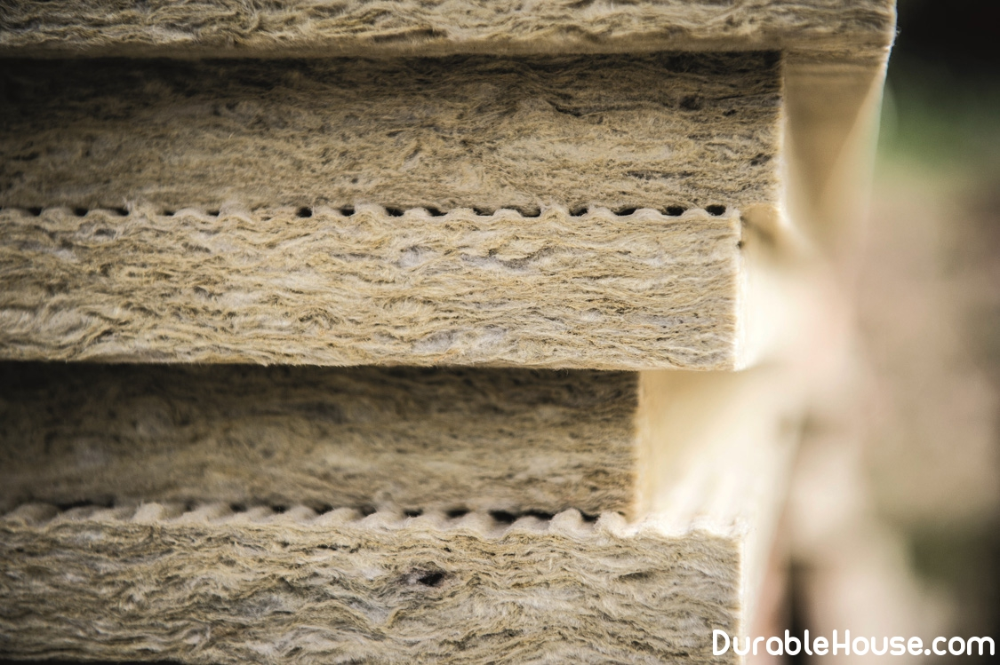

Mineral wool as coldprotection and soundproofing material
Mineral wool - a universal insulation, which, thanks to a fairly wide assortment list, can be used for sanitation of building envelopes, built from any material.
Various density mats and stone wool rolls allow to insulate walls, ceilings, floors on the ground and roof. It is only necessary to choose the type and density of the product correctly, then the result will be what you expect.
When insulating a building it is important to remember that there is no universal insulation. For each element (roof, wall or foundation) requires a thermal insulation material with specific properties.
As for the facades, there are three options to insulate the walls: laying the insulation inside walls (frame construction) or to warm the finished walls outside or indoors. we have repeatedly written about the fact that inside the walls there is no need to insulate the walls, because in the end this will lead to very serious negative consequences, therefore this kind of insulation even we will not consider.
More correctly place the mineral wool outside the facade. You can do this with two ways: in the first case, a heater is embedded in a crate filled on the walls (this method is suitable mainly for wooden houses), in the second - is attached to the wall with dowels and glue (for stone buildings). The use of "wet" processes associated with plastering of facades, gave the name "wet" way of warming.
The advantage of the "dry" method of warming the walls is that the work can be done in any season. On the facade of the building make a crate of bar and fill the formed space heater. From above all this construction is covered with windproof films, so that the cotton wool is not blown by the wind, and closed with finishing materials: siding, blockhouse, imitation of a bar, etc.
Begin
Work begins with the installation of the plinth, which will provide support for the first row and regulates the gap between the heater and the wall.
To set a profile, define a zero point using the water level. Then with a padded cord, mark the line along the entire length of the wall. Now take the glue for the mineral wool and grid, run the grid 10 cm above the target line and fix it with glue. Then attach plinth, use a perforator to make a hole and secure the profile dowels.
First row
In work, use only special glue, diluted exactly according to the instructionsю
The solution is applied to the entire surface of the slab, then smoothed out with a comb spatula. Apply glue in this way, rather than point. This will allow the plate to be normal grab the surface of the wall and add to it the rigidity. Very carefully refer to installation of the first row - twist here, then it will be very difficult to fix it.
If the wall has significant unevenness, then it must be leveled before gluing thermal insulation boards, and the period between these processes should be at least a week. Aligning irregularities during the gluing of plates will lead to insufficient strength glued joint.
Make sure that there are no slots between the slabs - these are the bridges of cold that your efforts to "no". Mineral plate must perfectly touch each other. If still screwed up, close the cracks with inserts gently undermine.
Mounting plates is made with a seam ligation of not less than 100 mm, during assembly it is desirable use predominantly solid slabs.
The absence of a ligation of joints or mosaic from the remains of the slab entails an increased the probability of crack formation, and cracks on the facade are small, they are very fast grow and "multiply" under the influence of humidity and temperature fluctuations.
Try to mount the plates without changes in height - sharp transitions in the thickness of the reinforcing layer will cause the appearance of cracks in the finish plaster layer.
Fix the plate with dowels, preferably composite, with a nail of fiberglass. If not attach them with dowels, then because of the high weight of the mineral wool, the insulated façade will collapse or there will be cracks.
Reinforcement
After the plates are secured with dowels, it is possible to start reinforcement. This stage it is necessary to strengthen the construction of insulation and protect the minvat itself.
First apply the first layer of glue on mineral wool, then in this glue is embedded reinforcing alkali-resistant mesh (glass mesh) and on it is applied a second layer of glue. Grid is applied to the facade with an overlap of 10 cm. In places where the grid does not find a grid, the plaster layer cracks after a couple of hours, respectively, will also look like decorative plaster.
After the reinforcement layer has dried, it is leveled by applying a putty and primed with special compounds.
Finishing Coating
The last layer in the insulation of the facade is the decorative layer - various types of decorative plasters (lambs, bark beetles, etc.), as well as facade paints. Main purpose finishing layer - protection from precipitation, ultraviolet, wind, various chemicals, contained in the air and of course, aesthetics. In order for moisture to evaporate from insulation, the decorative layer must have sufficient vapor permeability.